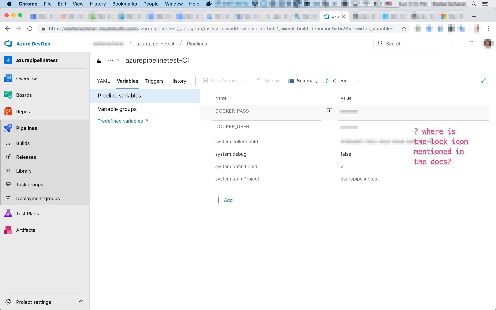
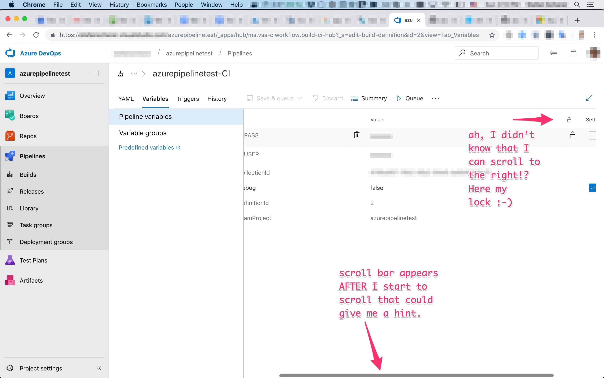

A few weeks ago I tried Azure Pipelines for one of my GitHub repos. Azure Pipelines is a cloud service to setup CI/CD pipelines. I'm already using Travis, CircleCI and AppVeyor for years, but I wanted to give Azure Pipelines a try to see how it has evolved.
It's very easy to hook it to your GitHub project, and it's free for open source projects. You typically add an azure-pipelines.yml in your GitHub repo to define the CI pipeline. Then this definition is also under version control. And users can easily fork your repo and hook up their own pipeline this the given YML file.
For a real project to build and push a multi-arch Windows/Linux Docker image I tried to use secret variables for the docker push. But I struggled for an hour reading the docs again and again and compare it with the actual UI I found from my MacBook. I just couldn't understand where this tiny lock icon should be. I added variables, removed them again, search for other options. Nothing. Is it only available in paid plan? All these thoughts to figure out when you don't have a clue where the developer has added this button.
Look at my screen:

No lock icon.
I don't know when it happened, but I "accidentally" two-finger-swiped on the table of variables.
Oh no, so close but it's really not intuitive for first-time users with a non-24" external display sitting on a chair in the conversatory :-)

Now I know where to look for that lock icon, but please MSFT let the first-time users know better where to put secrets. Otherwise they just add variables that should be secrets but as I just ran a test if it works that forked pull requests don't see these secrets. No the user of the fork can see this variable until you click on that "hidden" lock icon.
There is so much white space that can be used to have this lock column visible even on smaller displays.
The rest of the pipeline was straight forward and Azure Pipelines is able to build and push a multi-arch image to Docker Hub for several Windows versions as well as Linux for different CPU architectures with some tricks. Thanks Azure Pipelines team, you rock, I like Azure Pipelines so far.
If you want to give Microsoft feedback, you can vote up my comment here.